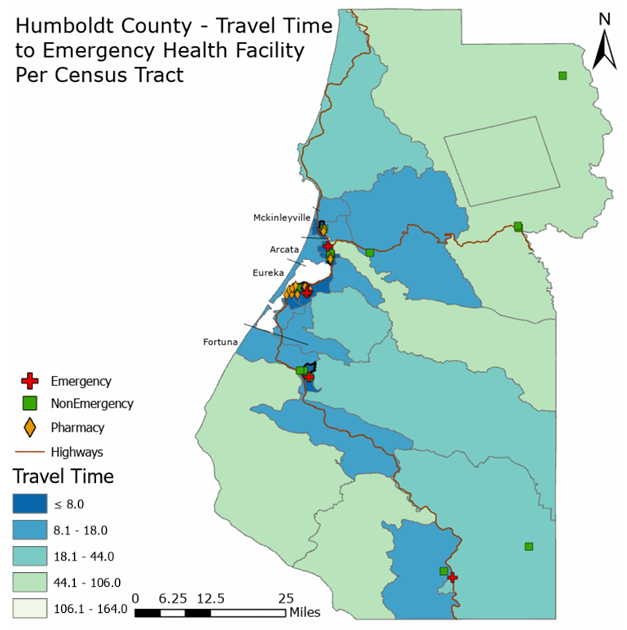
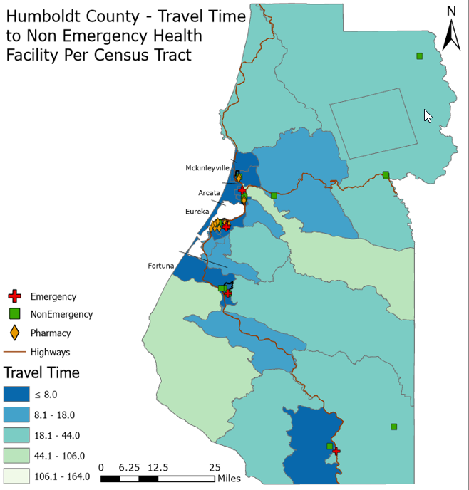
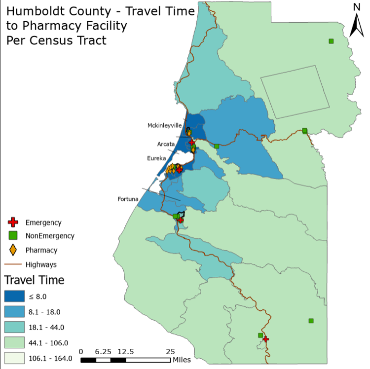

Python GIS • Network Analysis • Spatial Modeling
Modeling Rural Healthcare Accessibility
An automated GIS workflow for measuring road-network travel time to emergency, non-emergency, and pharmacy healthcare facilities throughout Humboldt County, California.

Project Overview
The Problem
Rural communities can experience substantially different levels of healthcare accessibility because of distance, transportation networks, terrain, and the geographic distribution of medical facilities.
Humboldt County provides a useful case study because it contains both concentrated coastal communities and large, mountainous rural areas.
The Goal
The goal of this project was to develop a reproducible road-network analysis that measures travel time from census tracts to healthcare facilities.
The resulting accessibility measurements were then evaluated against demographic, transportation, and environmental covariates using statistical models.
Analysis at a Glance
Automated GIS Workflow
The original workflow used manually downloaded OpenStreetMap data, but it was redesigned around APIs and Python automation to improve processing speed, reproducibility, and network connectivity.
Acquire Data
Download Census, road-network, demographic, and elevation datasets from online data sources and APIs.
Build Network
Construct the drivable OpenStreetMap network using OSMnx and prepare it for shortest-path analysis.
Calculate Access
Snap census tract centroids and healthcare facilities to network nodes and calculate minimum travel time.
Model Results
Export spatial results for cartography in ArcGIS Pro and statistical analysis using Generalized Additive Models in R.
Technology & Data
Python Geospatial Stack
Python handled road-network construction, data processing, routing, Census API requests, DEM processing, calculation of covariates, and export of final GIS datasets.
Modeling & Cartography
ArcGIS Pro was used to produce the final accessibility maps. Generalized Additive Models were developed in RStudio to evaluate relationships between travel time and the selected covariates.
Healthcare Accessibility Maps
Network travel time was calculated separately for emergency, non-emergency, and pharmacy healthcare services.

Emergency Healthcare
Emergency healthcare accessibility is greatest around the Eureka–Arcata corridor, while inland and mountainous census tracts experience substantially longer travel times.

Non-Emergency Healthcare
Non-emergency healthcare facilities are concentrated around the more populated coastal corridor, while rural inland areas generally experience longer travel times.

Pharmacy Accessibility
Pharmacy accessibility shows a strong geographic difference between urban and rural areas, with more remote inland census tracts experiencing longer modeled travel times.

Automated Workflow
The final workflow combines road-network acquisition, Census data, healthcare locations, terrain data, network routing, and automated spatial outputs.
Regression & Covariate Analysis
Generalized Additive Models were used to test relationships between healthcare travel time and five demographic, transportation, and environmental variables:
Model Performance
Emergency
0.711 Adjusted R²78.16% deviance explained
Non-Emergency
0.544 Adjusted R²62.83% deviance explained
Pharmacy
0.889 Adjusted R²91.32% deviance explained
Covariate Relationships

Terrain slope demonstrated the strongest and most consistent relationship with healthcare travel time. The relationship was nonlinear, with accessibility decreasing substantially in areas with steeper terrain.
Median income, population, vehicle availability, and road density showed comparatively weak relationships with modeled travel time within the study area.
Key Findings
- Terrain was the strongest predictor. Mean terrain slope was statistically significant across all three healthcare accessibility models.
- The Eureka–Arcata corridor had the highest accessibility. Census tracts near the primary coastal population centers consistently had shorter travel times.
- Rural inland areas experienced longer travel times. Mountainous and sparsely populated census tracts were generally less accessible by road.
- Pharmacy accessibility showed the greatest geographic disparity. The pharmacy model produced the strongest separation between urban and rural accessibility.
- Automation greatly improved the workflow. Moving from manually downloaded OSM datasets to API-based network construction reduced processing complexity and made the analysis more reproducible.
Limitations & Future Work
The analysis was limited by the relatively small number of census tracts and by the completeness of available healthcare facility datasets.
Future improvements could include higher-quality healthcare facility data, healthcare capacity information, validation against observed travel times, and application of the automated framework to additional counties.
Project Documents
Additional details about the workflow, methods, statistical analysis, and results are available in the full project report and presentation.